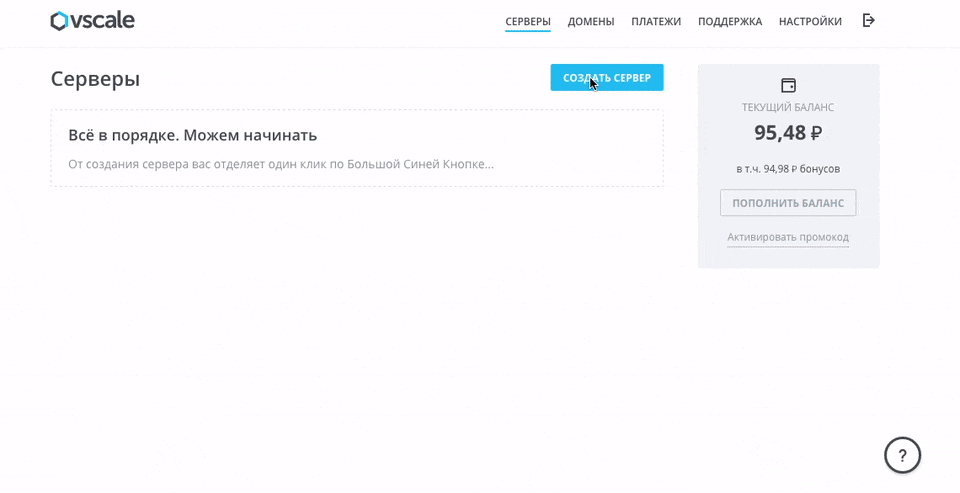
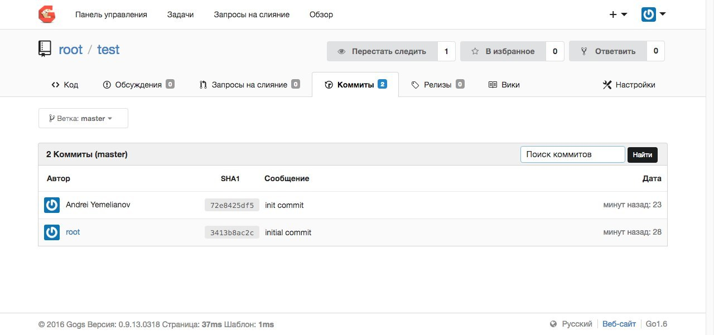

В числе самых обсуждаемых последних новостей в сообществе разработчиков были новые тарифы GitHub (см., например, здесь).
Конечно, у новых тарифов есть свои преимущества, но с нынешним курсом доллара их вряд ли можно назвать выгодными для российских пользователей.
Некоторые прибегают к альтернативному решению и разворачивают GitLab (или другой git-сервис) на собственном или арендованном сервере.
Но и у этого решения есть свои подводные камни: GitLab очень требователен к системным ресурсам. Для частных лиц гораздо проще платить 7 долларов в месяц за GitHub, чем арендовать сервер надлежащей конфигурации.
Из сказанного, однако, не следует, что у GitHub на сегодняшний день альтернативы нет. Об одном весьма интересном и перспективном решении мы хотели бы рассказать в этой статье. Знакомьтесь: Gogs. Этот инструмент будет интересен как для индивидуальных разработчиков, так и для небольших компаний.
Общая информация
Gogs — продукт китайских разработчиков. На первый взгляд он почти ничем не отличается от GitHub или BitBucket — это даже по дизайну заметно.
Но при всех внешних сходствах у него есть одно выгодное отличие от существующих аналогов: легковесность.
Gogs написан на Go (собственно, это название представляет собой сокращение от Go Git Service). Из этого факта вытекают серьёзные преимущества: низкие требования к системным ресурсам, минимум зависимостей, простота установки и настройки.
В числе важнейших характеристик Gogs также следует назвать:
поддержку протоколов HTTP(s) и SSH;
поддержку SMTP и LDAP;
возможность создания как приватных, так и публичных репозиториев;
интеграцию с социальными сетями (пока что поддерживаются GitHub, Google+, а также китайские сервисы QQ и Weibo);
возможность работы в связке с сервисами непрерывной интеграции и DevOps-сервисами (подробный список).
Продвижение Gogs на международном рынке началось в конце 2014 — начале 2015 года. Весной 2015 года появились первые статьи о нём на западных сайтах, что также способствовало популяризации продукта. Но говорить о полноценной конкуренции с GitHub и GitLab было ещё рано: у Gogs даже поддержки пулл-реквестов не было, не говоря уже о других важных функциях.
В конце 2015 года после более чем полугодового перерыва вышла в свет новая версия продукта. В ней было реализовано множество нововведений, самыми важными из которых являются, конечно же, поддержка пулл-реквестов и возможность создания вики-страниц для проектов.
Дизайн Gogs также был заметно улучшен, а интерфейс перевели на 18 языков, включая русский.
Gogs, GitHub и GitLab
Сравним Gogs с другими инструментами аналогичного плана. Результаты сравнения для наглядности представим в виде таблицы:
|
Характеристика |
Gogs |
GitHub |
GitLab |
|
Баг-трекер |
+ |
+ |
+ |
|
Поддержка аккаунтов организаций |
+ |
+ |
+ |
|
Wiki |
+ |
+ |
+ |
|
Ревью кода |
- |
+ |
+ |
|
Сниппеты кода |
- |
+ |
+ |
|
Веб-хуки |
+ |
+ |
+ |
|
Гит-хуки |
+ |
только в enterprise-версии |
только в enterprise-версии |
|
Поддержка LDAP |
+ |
+ |
+ |
|
Синхронизация групп LDAP |
- |
только в enterprise-версии |
только в enterprise-версии |
Установка Gogs
Рассмотрим процедуру установки и первичной настройки на примере OC Ubuntu 16.04. В качестве СУБД возьмем привычный MySQL.
Установим MySQL:
$ sudo apt-get update
$ sudo apt-get install -y mysql-server
После этого создайте файл gogs.sql:
$ nano gogs.sql
Добавьте в него следующие строки:
DROP DATABASE IF EXISTS gogs;
CREATE DATABASE IF NOT EXISTS gogs CHARACTER SET utf8 COLLATE utf8_general_ci;
Сохраните внесённые изменения и выполните:
$ mysql -u root -p [пароль пользователя root]< gogs.sql
Чтобы уcтановить gogs из исходников, вам понадобятся также системы контроля версий git и mercurial:
$ sudo apt-get install git mercurial
Далее вам нужно будет установить компилятор Go. Откройте файл /.bashrc и добавьте в него следующие строки:
export GOPATH=/home/git/go
export GOROOT=/usr/local/src/go
export PATH=${PATH}:$GOROOT/bin
Сохраните изменения и выполните:
$ source ~/.bashrc
После этого установить компилятор Go:
$ wget https://storage.googleapis.com/golang/go1.4.2.linux-amd64.tar.gz
$ tar zxf go1.4.2.linux-amd64.tar.gz
$ sudo mv go $GOROOT
Все необходимые зависимости установлены. Можно устанавливать Gogs:
$ go get -d github.com/gogits/gogs
$ cd $GOPATH/src/github.com/gogits/gogs
$ go build
По завершении установки нужно настроить запуск Gogs как службы. Для этого вам потребуется просто добавить в /etc/system/systemd файл gogs.service (шаблон см. здесь) и выполнить после этого следующие команды:.
$ sudo systemctl enable gogs
$ sudo systemtctl start gogs
Если всё сделано правильно, то по завершении установки страница настройки Gogs будет доступна по адресу http:// [IP-адрес сервера]:3000. Вся дальнейшая настройка осуществляется через графический интерфейс; там всё довольно просто и интуитивно понятно. Если вы планируете привязать к серверу с Gogs домен, вам потребуется также установить Nginx и настроить его в качестве обратного прокси (подробнее в официальной документации).
В процедуре установки Gogs ничего сложного нет. Но если вы являетесь пользователем нашего сервиса Vscale (кстати, отличный повод им стать), то всё можно сделать ещё проще: совсем недавно мы добавили в панель управления соответствующий образ. Один клик ― и виртуальная машина с уже установленным и настроенным Gogs создана и готова к использованию:

Как только сервер будет создан, откройте в браузере страницу http://[IP-адрес сервера]. Ничего настраивать дополнительно вам не потребуется: всё уже прописано в шаблоне и готово к работе.
Войдите в Gogs с помощью логина и пароля, полученных при установке.
Gogs в работе
Работать с Gogs просто. Если у вас есть опыт работы с GitHub, то вы без труда во всём разберётесь. Для начинающих пользователей в панели управления приводятся подробные шпаргалки.
Приведём элементраный пример. Создадим через графический интерфейс тестовый репозиторий.
После этого клонируем его на локальную машину:
$ git clone http://[IP-адрес сервера]/root/test.git
Внесём небольшие изменения в файл README.md:
$ echo 'Test' >> README.md
Закоммитим внесённые изменения:
$ git add --all && git commit -m "init commit" && git push origin master
Вам будет предложено ввести логин и пароль пользователя Gogs. После этого коммит будет добавлен в репозиторий. В панели управления всё это выглядит так:

Заключение
Мы попробовали поработать с Gogs – и остались вполне довольны. У продукта китайских разработчиков перспективы есть, и неплохие. За последний год (а в первый раз мы познакомились с Gogs в начале 2015 года) была проделана огромная работа по его усовершенствованию, и мы надеемся, что она будет продолжена в будущем.
Gogs уже сейчас является вполне достойной альтернативой GitHub и GitLab.В плане потребления системных ресурсов он гораздо экономичнее, чем любое из аналогичных решений. Как утверждают разработчики в своём блоге, его можно установить даже на RaspberryPi. Не знаем, как насчёт RaspberryPi, но на виртуальном сервере самой простой конфигурации в Vscale Gogs работает вполне стабильно на небольшом количестве репозиториев. Приглашаем всех попробовать и оценить. Если у вас уже есть опыт работы с Gogs — будем рады, если вы поделитесь им в комментариях.
Специально для тех, кто хочет получить готовый настроенный git-сервис, но при этом предпочитает более традиционные и уже зарекомендовавшие себя решения, мы добавили образ с GitLab. Сразу же отметим, что для самых бюджетных и популярных тарифов он недоступен: GitLab потребляет слишком много системных ресурсов, и серверы “младших” конфигураций его просто-напросто не потянут.
Пользуясь случаем, мы хотели бы обсудить ещё одну важную тему. Сегодня некоторые VPS-провайдеры предлагают образы с предустановленным ПО. У нас в Vscale, например, уже есть: Ajenti, VestaCP, WordPress, Docker, GitLab и Gogs. Этот список мы планируем значительно расширить.
В связи с этим — вопрос ко всем пользователям VPS: какие образы с предустановленным ПО вам нужны? Что ещё, помимо стандартных CMS и панелей управления хостингом, вы бы хотели видеть у вашего провайдера? Если в списке чего-то нет, просьба делиться в комментариях.